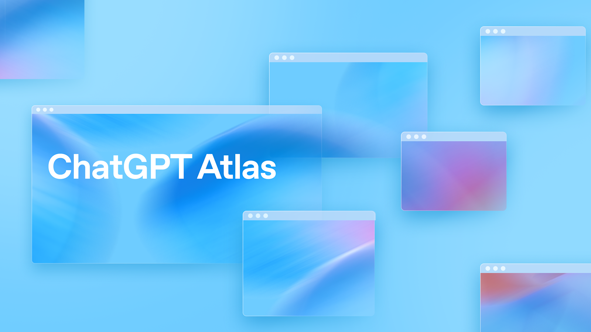

챗GPT 아틀라스 8월 9일 종료 전 할 일
오늘은 2026년 8월 4일이에요. 챗GPT 아틀라스(ChatGPT Atlas)가 멈추기까지 5일 남았어요.
OpenAI는 공식 도움말에서 이렇게 밝혀요. 이 브라우저는 2026년 8월 9일부터 멈출 예정이에요.
이 5일 사이에 옮겨 두지 않으면 사라지는 것들이 있어요. 북마크·열린 탭·방문 기록이 그 대상이에요.
이 글은 지금 당장 손대야 할 것부터 순서대로 안내해요. 데스크톱 앱 통합 이야기는 다른 글에서 이미 다뤘어요.

종료 안내 화면이 아니라, 아틀라스 출시 당시 OpenAI가 공개한 공식 브랜드 이미지예요.
이미지 출처: OpenAI 공식 발표문 — Introducing ChatGPT Atlas · 네이버 본문엔 받아서 재업로드 권장
챗GPT 아틀라스, 왜 8월 9일에 멈추나요
브라우저 기반 에이전트 기능을 챗GPT·코덱스로 옮기면서 아틀라스는 접기 때문이에요.
챗GPT 아틀라스는 2026년 8월 9일부터 작동을 멈출 예정이에요. OpenAI 공식 도움말은 이렇게 밝혀요.
"We're deprecating Atlas and moving browser-based agentic capabilities into ChatGPT and Codex." (OpenAI 공식 도움말, 2026.08.04 기준) 아틀라스를 폐지하고, 브라우저 기반 에이전트 기능을 챗GPT·코덱스로 옮긴다는 뜻이에요.
이 통합 자체와 플랜별 이용 범위는 다른 글에서 이미 짚었어요. 챗GPT 데스크톱 앱이 Chat·Work·Codex를 한 창에 묶은 이야기는 그 글에서 다뤘어요. 자세한 내용은 챗GPT 워크란 — 챗GPT·코덱스와 다른 점, 플랜별 이용 범위에서 볼 수 있어요.
이 글은 그 구조 설명 말고, 8월 9일 전에 실제로 손대야 할 일에만 집중할게요.
북마크, 자동으로 옮겨지나요
북마크는 자동으로 옮겨지지 않는다고 공식 안내가 밝혀요.
그래서 아틀라스가 아직 열리는 지금, 미리 내보내 둬야 해요. 공식 도움말이 정리한 순서는 이래요.
- 아틀라스를 열어요.
- 북마크 메뉴 또는 북마크 관리자를 열어요. 원문은 이 화면을 bookmarks menu 또는 bookmark manager라고만 적어요. 더 자세한 화면 구성은 안 나와요.
- 북마크 내보내기 옵션을 선택해요.
- 내보낸 파일을 HTML 형식으로 저장해요. 나중에 찾을 수 있는 위치를 골라 두는 게 좋아요.
직접 캡처가 필요한 화면이에요.
내보낸 파일은 크롬으로 가져올 수 있어요. 크롬을 예로 든 순서는 공식 도움말에 이렇게 적혀 있어요.
- 크롬을 열어요.
- 더보기(More)를 선택해요.
- 북마크 및 목록(Bookmarks and lists)을 선택해요.
- 북마크 및 설정 가져오기(Import bookmarks and settings)를 선택해요.
- 아틀라스에서 내보낸 HTML 파일을 골라요.
- 열기를 선택하고, 완료를 선택하면 끝나요.
공식 안내는 크롬을 예시로 들면서 "다른 브라우저로도 가져올 수 있다"고 표현해요. 다만 크롬 외 브라우저의 구체적인 가져오기 방법은 이 안내에 나와 있지 않아요.
열린 탭·방문 기록도 자동으로 옮겨지나요
열린 탭과 방문 기록도 자동으로는 옮겨지지 않을 수 있다고 공식 안내가 밝혀요.
| 항목 | 자동 이전 여부 | 공식 안내 |
|---|---|---|
| 북마크 | 안 됨 | 미리 내보내서 다른 브라우저로 가져오기 |
| 열린 탭 | 안 될 수 있음 | 필요한 페이지를 북마크하거나 주소를 따로 저장해 두기 |
| 방문 기록 | 안 될 수 있음 | 나중에 필요한 페이지는 미리 저장·북마크해 두기 |
표: 챗GPT 아틀라스 데이터별 자동 이전 여부 (OpenAI 공식 도움말 기준, 2026.08.04 확인 · 확정 표현이 아니라 "안 될 수 있음" 수준의 안내예요)
나중에 또 볼 페이지는 주소를 따로 저장해 두는 게 안전해요. 문서에 옮겨 적거나 북마크로 남겨도 좋아요.
쿠키·로그인 정보, 챗GPT 대화 기록은 어떻게 되나요
쿠키·로그인 세션은 다른 브라우저로 옮길 수 없고, 챗GPT 대화 기록은 아틀라스 데이터와 별개라 그대로 남아요.
아틀라스는 가능한 범위에서 내보내기 옵션을 제공한다고 안내해요. 다만 그 파일을 아무에게나 넘기면 안 돼요. 신뢰할 수 있는 상대가 아니면 쿠키·세션 파일을 공유하지 말라고 공식 도움말이 직접 경고해요.
"Do not share cookie or session files unless you trust the recipient and understand what access the files may provide." (OpenAI 공식 도움말, 2026.08.04 기준) 그 파일이 어떤 접근 권한을 줄 수 있는지 이해한 뒤에만 다루라는 뜻이에요.
챗GPT에서는 아틀라스가 멈춘 뒤에도 대화 기록을 계속 이어 볼 수 있어요. 다만 플랜·설정에 따라 범위가 달라질 수 있다고 공식 안내는 덧붙여요.
아틀라스 대신 뭘 쓰면 되나요
공식 도움말은 새 챗GPT 데스크톱 앱과 크롬용 챗GPT 확장 프로그램을 대안으로 소개해요.
| 대안 | 공식 설명 |
|---|---|
| 새 챗GPT 데스크톱 앱 | 여러 탭·다운로드·계정 로그인 지원 등 더 폭넓은 브라우저 기반 작업을 지원한다고 안내 |
| 크롬용 챗GPT 확장 프로그램·사이드바 | 크롬에서 챗GPT를 함께 쓸 수 있도록 돕는다고 안내(제공 여부는 상황에 따라 다름) |
표: 아틀라스 종료 이후 공식이 안내하는 대안 (OpenAI 공식 도움말 기준)
데스크톱 앱 자체는 다른 글에서 이미 다뤘어요. 구조와 플랜별 범위는 챗GPT 워크란 — 챗GPT·코덱스와 다른 점, 플랜별 이용 범위에서 볼 수 있어요.
이용 가능 여부는 여러 조건에 따라 달라질 수 있다고 공식 안내에 나와 있어요. 플랜·지역·기기·브라우저·워크스페이스 설정이 그 조건이에요. 워크스페이스로 챗GPT를 쓴다면 관리자에게 물어보는 게 확실해요.
자주 묻는 질문
Q. 내보낸 북마크 파일을 못 찾겠으면 어디를 봐야 하나요?
다운로드 폴더를 먼저 확인해 보세요. 내보낼 때 다른 폴더를 골랐다면 그 폴더도 함께 확인하라고 공식 안내가 알려 줘요.
Q. 크롬으로 가져온 북마크가 안 보이면 어디를 확인하나요?
크롬이 북마크를 새 폴더에 넣었을 수 있다고 공식 도움말에 나와 있어요. 다른 북마크 항목에 들어갔을 수도 있어요. 크롬 북마크 관리자를 열어 그 위치들을 확인해 보면 돼요.
Q. 왜 하필 8월 9일로 정했나요?
공식 도움말은 2026년 7월 9일에 종료를 공지했다고 밝혀요. 그때 약 30일의 전환 기간을 뒀어요. 그 계산으로 8월 9일이 나온 거예요.
Q. 워크스페이스로 챗GPT를 쓰는 팀이라면 관리자가 뭘 준비해야 하나요?
구성원 중 아틀라스를 쓰는 사람이 있는지부터 확인하고, 이 안내를 함께 공유하는 게 첫 단계라고 공식 도움말은 권해요. 8월 9일 전에 북마크를 내보내고 중요한 페이지를 저장하도록 안내한 다음, 데스크톱 앱·챗GPT 크롬 확장이 워크스페이스에서 바로 쓸 수 있는지도 점검하면 좋아요. 아틀라스를 언급하는 내부 문서나 온보딩 자료가 있다면 갱신하고, 쿠키·세션 파일은 민감정보로 다루도록 구성원에게 다시 알려 주는 편이 안전해요.
Q. 8월 9일이 지나면 아틀라스 앱 자체가 안 열리나요?
그 이후엔 아틀라스가 더 이상 열리지 않을 수 있다고 공식 도움말에 나와 있어요. 브라우징·에이전트 기능도 지원하지 않을 수 있어요. 확정된 단정이 아니라 "그럴 수 있다"는 수준의 안내예요.
참고한 곳
· OpenAI 공식 도움말 — Evolving Atlas into ChatGPT for browser-based agentic work
✔ 같이 보면 좋아요
· 챗GPT 워크란 — 챗GPT·코덱스와 다른 점, 플랜별 이용 범위
하루 정리
· 챗GPT 아틀라스는 2026년 8월 9일부터 작동을 멈춰요
· 북마크는 자동으로 안 옮겨지니 지금 내보내서 크롬으로 가져와 둬야 해요
· 열린 탭·방문 기록도 자동으로 안 옮겨질 수 있으니 필요한 주소는 지금 저장해 두세요
· 쿠키·로그인 세션은 다른 브라우저로 못 가져오니 필요한 사이트는 재로그인을 준비해 두세요
아틀라스를 지금도 쓰고 계신다면, 오늘 안에 북마크 내보내기부터 해 두는 게 안전해요.